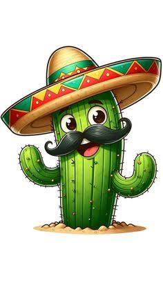

Septiembre congrega los acontecimientos cruciales en la construcción de la identidad y soberanía mexicana.
13 de septiembre – Gesta Heroica de los Niños Héroes: Homenaje a los cadetes del Colegio Militar que defendieron el Castillo de Chapultepec en 1847 durante la intervención estadounidense.
15 de septiembre – La Noche del Grito de Dolores: Celebración popular donde se recrea el llamado a las armas realizado por Miguel Hidalgo en 1810. Se festeja con verbenas, pirotecnia y platillos tradicionales como el chile en nogada y el pozole.
16 de septiembre – Aniversario del Inicio de la Independencia: Día de descanso obligatorio en el calendario oficial. Es la fecha cívica principal del país y se conmemora con el tradicional Desfile Militar en el Zócalo de la Ciudad de México y actos solemnes en todos los municipios.
27 de septiembre – Consumación de la Independencia (1821): Marca el fin de 11 años de guerra insurgente con la entrada triunfal del Ejército Trigarante, encabezado por Agustín de Iturbide y Vicente Guerrero, a la Ciudad de México.
30 de septiembre – Natalicio de José María Morelos y Pavón (1765): Conmemoración del nacimiento del "Siervo de la Nación", figura clave del movimiento independentista y redactor de los Sentimientos de la Nación.

NOMBRE : LOZANO LINARES MARCO ANTONIO
NO.CONTROL : 0587
SEMESTRE: 4TO SEMESTRE | GRUPO : 4*I
ESPECIALIDAD : PROGRAMACION